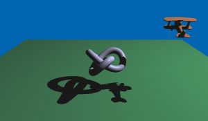

Qt 3D: Shadow Map QML Example
A Qt 3D QML application that illustrates how to render a scene in Qt 3D with shadows.

Qt 3D Shadow Map illustrates how to configure the renderer in order to accommodate custom rendering techniques. The example application displays a self-shadowed plane and trefoil knot.
We implement shadow mapping using a two pass rendering. In the first pass, we generate the shadow information. In the second pass, we generate the scene using the forward rendering technique with Phong shading, while at the same time using the information gathered in the first pass to draw the shadows.
The entire rendering is configured using QML, but it is possible to use C++ to achieve the very same result.
Running the Example
To run the example from Qt Creator, open the Welcome mode and select the example from Examples. For more information, visit Building and Running an Example.
Setting Up the Scene
We set up the entire scene in the main.qml file.
To be able to use the types in the Q3D and Q3D Renderer modules, we must import the modules:
import Qt3D.Core 2.0 import Qt3D.Render 2.0
The first entities we create are a Camera, which represents the camera used for the final rendering, and a Configuration, which allows us to control this camera using the keyboard or the mouse:
import Qt3D.Input 2.0 import Qt3D.Extras 2.0 Entity { id: sceneRoot Camera { id: camera projectionType: CameraLens.PerspectiveProjection fieldOfView: 45 aspectRatio: _window.width / _window.height nearPlane: 0.1 farPlane: 1000.0 position: Qt.vector3d(0.0, 10.0, 20.0) viewCenter: Qt.vector3d(0.0, 0.0, 0.0) upVector: Qt.vector3d(0.0, 1.0, 0.0) } FirstPersonCameraController { camera: camera }
We then create a Light custom entity, which represents our light. It is a directional spotlight, placed somewhere above the plane and looking down at the scene’s origin:
ShadowMapLight {
id: light
}
This light entity is used by our custom frame graph, ShadowMapFrameGraph, and our rendering effect, AdsEffect, whose instances are created just after the light:
components: [
ShadowMapFrameGraph {
id: framegraph
viewCamera: camera
lightCamera: light.lightCamera
},
// Event Source will be set by the Qt3DQuickWindow
InputSettings { }
]
AdsEffect {
id: shadowMapEffect
shadowTexture: framegraph.shadowTexture
light: light
}
Last, we create three entities for the meshes in the scene: a trefoil knot, a toy plane, and a ground plane. They aggregate a mesh, a transformation, and a material that uses the AdsEffect. The toy plane and the trefoil knot transformations are animated:
// Trefoil knot entity
Trefoil {
material: AdsMaterial {
effect: shadowMapEffect
specularColor: Qt.rgba(0.5, 0.5, 0.5, 1.0)
}
}
// Toyplane entity
Toyplane {
material: AdsMaterial {
effect: shadowMapEffect
diffuseColor: Qt.rgba(0.9, 0.5, 0.3, 1.0)
shininess: 75
}
}
// Plane entity
GroundPlane {
material: AdsMaterial {
effect: shadowMapEffect
diffuseColor: Qt.rgba(0.2, 0.5, 0.3, 1.0)
specularColor: Qt.rgba(0, 0, 0, 1.0)
}
}
}
Specifying the Light
We specify the Light custom entity in ShadowMapLight.qml.
Again, we import the necessary modules:
import Qt3D.Core 2.0 import Qt3D.Render 2.0
We then use an Entity type as the root element of the custom QML type. The light is a directional spotlight that exposes as properties a position, intensity, and a 4×4 transformation matrix:
Entity { id: root property vector3d lightPosition: Qt.vector3d(30.0, 30.0, 0.0) property vector3d lightIntensity: Qt.vector3d(1.0, 1.0, 1.0) readonly property Camera lightCamera: lightCamera readonly property matrix4x4 lightViewProjection: lightCamera.projectionMatrix.times(lightCamera.viewMatrix)
In the first rendering pass, we use the light as a camera, and therefore we use a Camera entity within the light and expose it as a property:
Camera {
id: lightCamera
objectName: "lightCameraLens"
projectionType: CameraLens.PerspectiveProjection
fieldOfView: 45
aspectRatio: 1
nearPlane : 0.1
farPlane : 200.0
position: root.lightPosition
viewCenter: Qt.vector3d(0.0, 0.0, 0.0)
upVector: Qt.vector3d(0.0, 1.0, 0.0)
}
}
Configuring the Framegraph
In Qt 3D, the frame graph is the data-driven configuration for the rendering. We implement the frame graph in the ShadowMapFrameGraph.qml file.
In addition to the Qt 3D and Qt 3D Render modules, we also import the Qt Quick module:
import QtQuick 2.2 as QQ2 import Qt3D.Core 2.0 import Qt3D.Render 2.0
The code defines a RenderSettings node that has a tree of nodes as the active frame graph:
RenderSettings {
activeFrameGraph: Viewport {...}
}
Any path from the leaves of this tree to the root is a viable frame graph configuration. Filter entities can enable or disable such paths, and selector entities can alter the configuration.
In our case, the tree looks like this:
Viewport
RenderSurfaceSelector
RenderPassFilter
RenderTargetSelector
ClearBuffers
CameraSelector
RenderPassFilter
ClearBuffers
CameraSelector
So we have two paths from the topmost Viewport entity. Each path corresponds to a pass, or phase, of the shadow map technique. The paths are enabled and disabled using a RenderPassFilter, a node that can filter depending on arbitrary values defined in a given render pass. In this example, it is a string:
RenderPassFilter {
matchAny: [ FilterKey { name: "pass"; value: "shadowmap" } ]
The actual passes are not defined within the frame graph. Instead the available passes are declared in the Materials used in the scene graph. The frame graph is only used to select which passes are used when rendering.
Generating the Shadow Map
In the shadow map generation pass, we must render to an offscreen surface (Framebuffer Object) which has a depth texture attachment. In Qt 3D, it is represented by the RenderTarget entity, which has a number of attachments.
In this example, we need only a depth attachment. We define it as a RenderAttachment entity using the RenderAttachment.DepthAttachment type that stores the depth and a Texture2D entity that actually configures the exture storage used to store the depth information:
RenderTargetSelector {
target: RenderTarget {
attachments: [
RenderTargetOutput {
objectName: "depth"
attachmentPoint: RenderTargetOutput.Depth
texture: Texture2D {
id: depthTexture
width: 1024
height: 1024
format: Texture.DepthFormat
generateMipMaps: false
magnificationFilter: Texture.Linear
minificationFilter: Texture.Linear
wrapMode {
x: WrapMode.ClampToEdge
y: WrapMode.ClampToEdge
}
comparisonFunction: Texture.CompareLessEqual
comparisonMode: Texture.CompareRefToTexture
}
}
]
}
Moreover, in this first pass, we must render using the light’s camera. Therefore, we have a CameraSelector entity that sets the camera to the one exported by the Light:
CameraSelector {
id: lightCameraSelector
}
The second pass is more straightforward, because we simply render to the screen using the main camera:
RenderPassFilter {
matchAny: [ FilterKey { name: "pass"; value: "forward" } ]
ClearBuffers {
clearColor: Qt.rgba(0.0, 0.4, 0.7, 1.0)
buffers: ClearBuffers.ColorDepthBuffer
CameraSelector {
id: viewCameraSelector
}
}
}
Using Effects
The bulk of the magic happens in the AdsEffect.qml file, where our main Effect is defined. It implements the Ambient, Diffuse and Specular (ADS) Lighting Model using Phong shading with the addition of shadow mapping.
An effect contains the implementation of a particular rendering strategy. In this example, shadow mapping using two passes:
Effect { id: root property Texture2D shadowTexture property ShadowMapLight light
The parameters list defines some default values for the effect. The values will get mapped to shader program uniform variables, so that in the shaders we can access their values. In this example, we expose some information from the Light entity (position, intensity, view or projection matrix defined by the internal camera) and the shadow map texture exposed by the frame graph:
parameters: [
Parameter { name: "lightViewProjection"; value: root.light.lightViewProjection },
Parameter { name: "lightPosition"; value: root.light.lightPosition },
Parameter { name: "lightIntensity"; value: root.light.lightIntensity },
Parameter { name: "shadowMapTexture"; value: root.shadowTexture }
]
It is possible to put such parameters all the way down, from a Material, to its Effect, to one of the effect’s Techniques and a RenderPass within a Technique. This allows a Material instance to override defaults in an Effect, Technique or RenderPass.
To adapt the implementation to different hardware or OpenGL versions, we could use one or more Technique elements. In this example, only one technique is provided, targeting OpenGL 3.2 Core, or later:
techniques: [
Technique {
graphicsApiFilter {
api: GraphicsApiFilter.OpenGL
profile: GraphicsApiFilter.CoreProfile
majorVersion: 3
minorVersion: 2
}
Inside the technique, we finally have the definition of our two rendering passes. We tag each pass with a FilterKey object, matching the ones we specified in the frame graph configuration, so that each pass will have different rendering settings:
renderPasses: [
RenderPass {
filterKeys: [ FilterKey { name: "pass"; value: "shadowmap" } ]
The first pass is the shadow map generation. We load a suitable set of GLSL shaders, which are actually extremely simple. They do only MVP (Model, View, Projection) to bring meshes from their model space into clip space (and, remember, in this first pass, the light is the camera). The fragment shader is totally empty, because there is no color to be generated, and the depth will be automatically captured for us by OpenGL:
shaderProgram: ShaderProgram {
vertexShaderCode: loadSource("qrc:/shaders/shadowmap.vert")
fragmentShaderCode: loadSource("qrc:/shaders/shadowmap.frag")
}
In this first pass, we also set some custom OpenGL state in the form of a polygon offset and depth testing mode:
renderStates: [
PolygonOffset { scaleFactor: 4; depthSteps: 4 },
DepthTest { depthFunction: DepthTest.Less }
]
Rendering Using Phong Shading
The second pass is a normal forward rendering using Phong shading. The code in the effect entity is extremely simple. We simply configure some parameters and load a pair of shaders which will be used when drawing.
The first part of the shadow mapping happens in the vertex shader defined in ads.vert file, where we output towards the fragment shader the coordinates of each vertex in light space:
positionInLightSpace = shadowMatrix * lightViewProjection * modelMatrix * vec4(vertexPosition, 1.0);
Actually, the coordinates get adjusted a little to allow us to easily sample the shadow map texture.
The second part happens in the fragment shader defined in the ads.frag file, where we sample the shadow map. If the currently processed fragment is behind the one closest to the light, then the current fragment is in shadow (and only gets ambient contribution). Otherwise, it gets full Phong shading:
void main()
{
float shadowMapSample = textureProj(shadowMapTexture, positionInLightSpace);
vec3 ambient = lightIntensity * ka;
vec3 result = ambient;
if (shadowMapSample > 0)
result += dsModel(position, normalize(normal));
fragColor = vec4(result, 1.0);
}